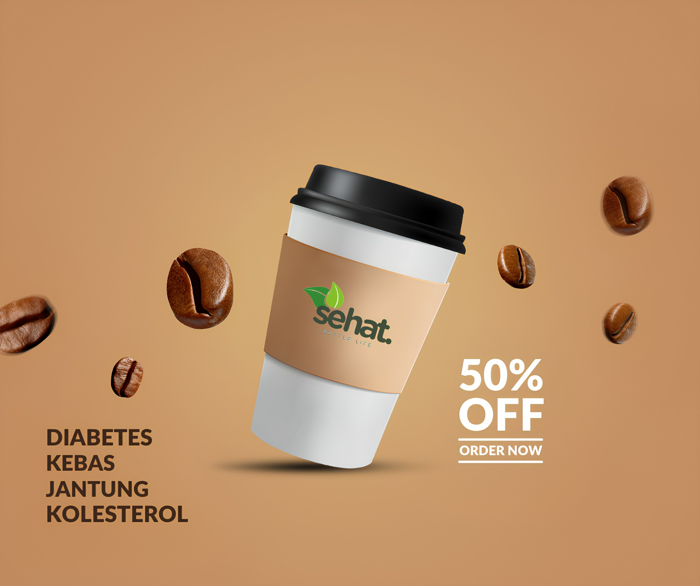

Better Life in Every Sip
Kopi Sehat adalah kopi hasil fermentasi yang dirancang untuk memberikan manfaat kesehatan tambahan seperti menurunkan gula darah, kolesterol, menjaga kesehatan jantung, dan memperlancar peredaran darah. Diracik dari 100% biji kopi pilihan dan telah teruji aman untuk penderita diabetes dan gangguan metabolisme lainnya.
